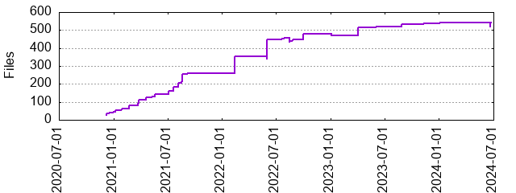

Files
- Total files
- 542
- Total lines
- 154764
- Average file size
- 492445.52 bytes

| Extension | Files (%) | Lines (%) | Lines/file |
|---|
| 2 (0.37%) | 178 (0.12%) | 89 |
| bak | 1 (0.18%) | 8185 (5.29%) | 8185 |
| bat | 68 (12.55%) | 263 (0.17%) | 3 |
| csv | 6 (1.11%) | 12084 (7.81%) | 2014 |
| dll | 1 (0.18%) | 11070 (7.15%) | 11070 |
| gz | 13 (2.40%) | 112184 (72.49%) | 8629 |
| htm | 3 (0.55%) | 18041 (11.66%) | 6013 |
| html | 2 (0.37%) | 264 (0.17%) | 132 |
| json | 58 (10.70%) | 51407 (33.22%) | 886 |
| key | 1 (0.18%) | 0 (0.00%) | 0 |
| md | 2 (0.37%) | 33 (0.02%) | 16 |
| py | 208 (38.38%) | 59332 (38.34%) | 285 |
| sav | 2 (0.37%) | 1398 (0.90%) | 699 |
| sh | 11 (2.03%) | 44 (0.03%) | 4 |
| sql | 2 (0.37%) | 799 (0.52%) | 399 |
| txt | 10 (1.85%) | 1934 (1.25%) | 193 |
| whl | 98 (18.08%) | 594701 (384.26%) | 6068 |
| xlk | 1 (0.18%) | 5715 (3.69%) | 5715 |
| xls | 1 (0.18%) | 3634 (2.35%) | 3634 |
| xlsx | 40 (7.38%) | 36914 (23.85%) | 922 |
| xml | 3 (0.55%) | 31 (0.02%) | 10 |
| xsd | 6 (1.11%) | 3120 (2.02%) | 520 |
| yaml | 3 (0.55%) | 598 (0.39%) | 199 |